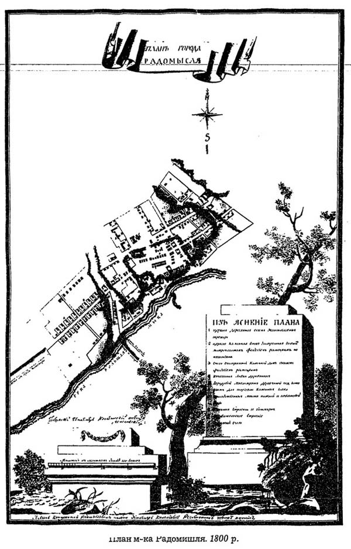
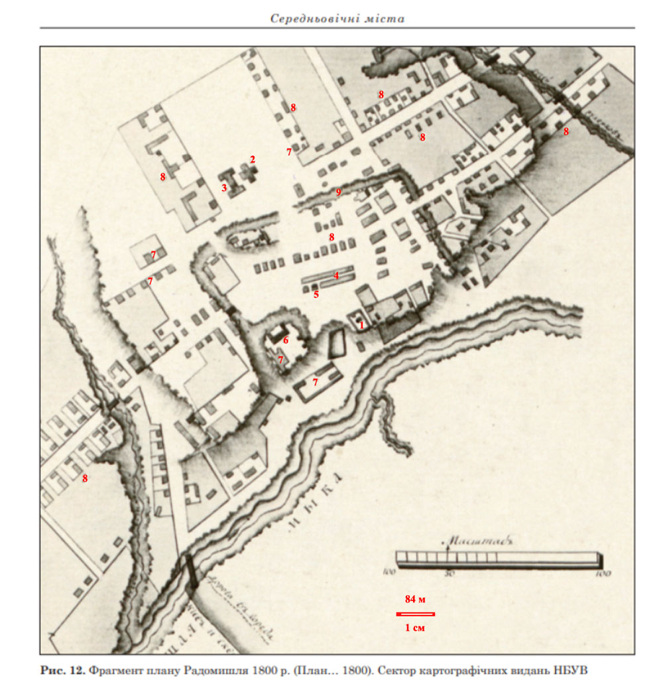
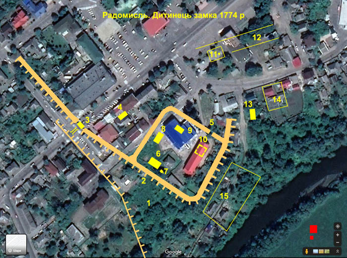
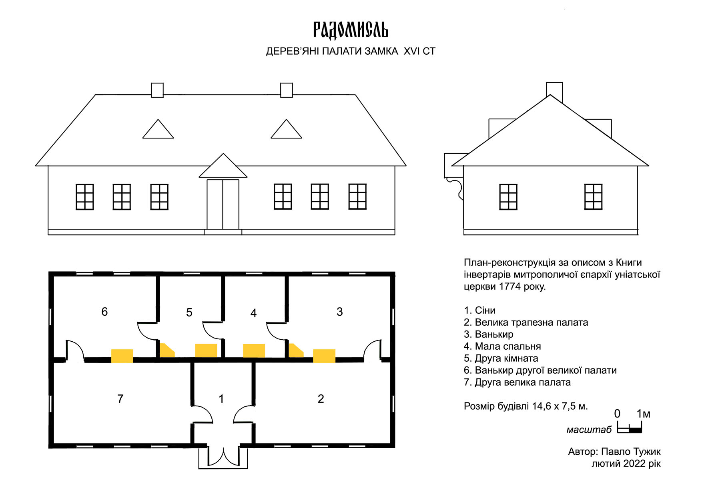
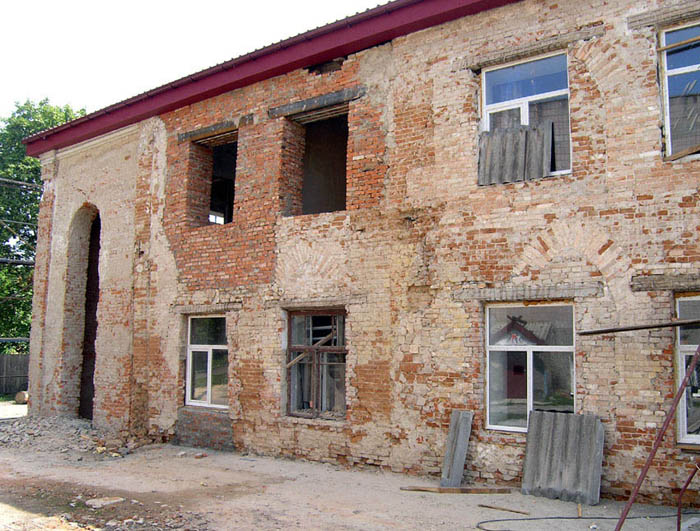
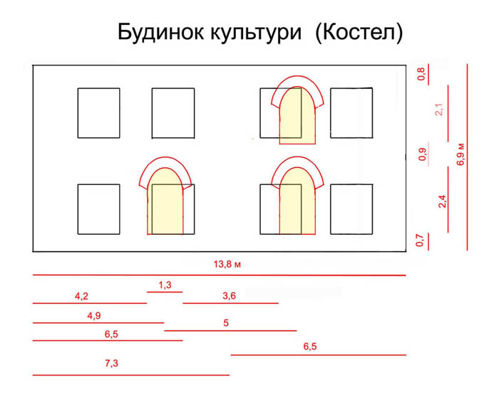
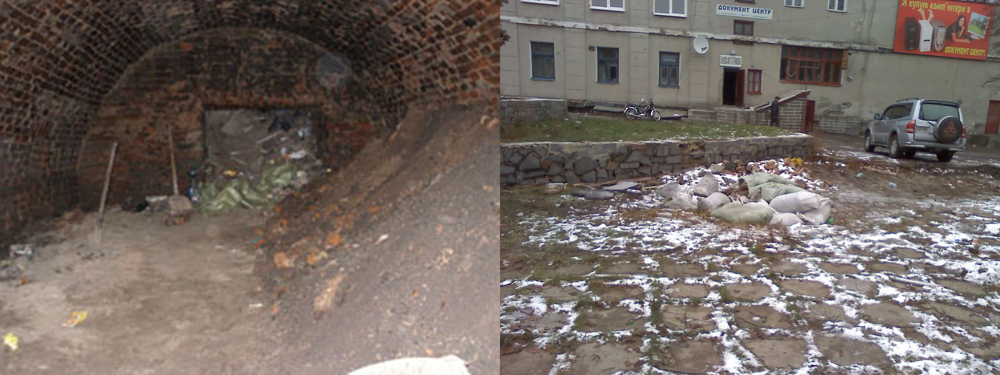

Будівлі Радомисльського замка
План Радомисля 1800 року
У Національній бібліотеці України імені В. І. Вернадського зберігається Атлас Київської губернії, який складається з Генеральної та дванадцяти повітових мап, а також з дванадцяти планів повітових міст. З цього атласу мені вдалося знайти в інтернеті електронну копію плану Радомисля 1800 року.

На жаль, цей план низької якості, проте все ж таки дає загальне уявлення про місто того часу. Через п’ять років минулої осені мені вдалося знайти якісніший його фрагмент та окремо список позначень.

- Церква дерев’яна Св. Трійці.
- Церква кам’яна уніатських митрополитів незакінчена.
- Кам’яний будинок митрополита Т. Ростоцького.
- Дерев’яні лавки купців.
- Магістрат дерев’яний, під яким торгові кам’яні лавки.
- Присутствені місця, нижній і повітовий суди.
- Державні будівлі й винокурня.
- Будинки мешканців міста.
- Земляний вал.
З плану видно, що місто Радомисль у 1800 році — це невеличке поселення, яке не було забудоване навіть у межах сучасної центральної частини. Річка Мика омивала його з південного сходу, річище Тетерева в ті часи проходило біля Рудні, а точка зливу річок була нижче по течії на 800 метрів. Головний в’їзд у місто проходив з боку Микгорода і далі по вулиці, яка нині має назву Старокиївська. Цей план міста цікавий тим, що на ньому показано контури земляних укріплень дерев’яного замку, збудованого в кінці XVI століття.
Цікаве місцеве мовне явище: часто містяни, які навіть живуть біля самого центру сучасного Радомишля, кажуть, що йдуть не в центр по справах, а в «го́род». Раніше я вважав це суржиком або діалектом, відповідником слова «місто», а згодом збагнув, що це топонім такий самий, як Рудня, Папірня, Хутір та інші. Давньоруське слово «го́род» вживалося для означення огородженого укріплення: міста, замку, фортеці. Тобто радомислянам, які жили відразу за палями замку, потрібно було ходити по справах у го́род, у прямому значенні цього слова! До речі, я з’ясував, що у сусідньому місті Малин такого явища, як «йти в го́род», немає. Це ще один доказ на користь топоніму, що залишився нам у спадок від давнього замку.
План Радомисля 1800 року цікавий ще і тим, що за ним можна точно локалізувати, де був розташований сам замок та деякі його споруди. Вивчаючи план, я згадав, що існує ще один документ, близький за часом до нього. Це опис замку, виявлений у «Книзі інвентарів митрополичої єпархії уніатської церкви» за 1774 рік, далі — «Книга інвентарів єпархії». Він був знайдений нашим земляком з Потіївки Леонідом Тимошенком — українським істориком, професором, кандидатом історичних наук. Оригінал документа зберігається в Центральному державному історичному архіві Росії (м. Санкт-Петербург).
Для загального доступу я перевів документ в електронну форму, розбив його на окремі частини за описом об’єктів, виділивши їх заголовками, і текст доповнив невеликим тлумачним словником.
Слід зауважити, що опис у «Книзі інвентарів єпархії» непростий для читання, бо це переклад зі старопольської мови, зроблений людиною, яка жила в іншому часовому, традиційному, культурному середовищі, мала відмінний від нашого менталітет, інше бачення навколишнього світу. До того ж в описі трапляються помилки, адже від них жодна людина не застрахована. Проте їх виявити та виправити допомагає сам контекст і логіка сутності існування речей.
Використовуючи плани Радомисля 1800 і 1848 років та «Книгу інвентарів єпархії», я зробив проєкцію деяких об’єктів замку на сучасну аерокосмічну фото-основу міста. Слід зауважити, що, користуючись цими давніми планами, не слід звертати великої уваги на розміри показаних об’єктів, а також бути прискіпливим, використовуючи масштабну лінійку, бо вони, хоча накреслені чудово, проте мають деякі спотворення і невідповідності.

Дитинець замку локалізується з мисом на березі р. Тетерів. В наш час, на ньому розташовані будівлі Будинку культури, спорткомплексу «Динамо» та Римо-католицької каплиці.
На плані вказано:
- Яр, який переходить в рів (зараз залишок яру і вул. Міськради).
- Вал з огорожею з палів з південно-західного боку замку.
- Брама замку і міст перед нею через рів.
- Комора з соснового дерева на два поверхи (локація вказана приблизно).
- Вхід на дитинець замку.
- Муровані резиденції за описом в «Книзі інвентарів єпархії». (локація вказана приблизно).
- Льох мурований (локалізується зі знайденим льохом при прокладанні теплотраси в 70-х роках XX століття біля Римо-католицької каплиці).
- Дерев’яні старі палати (локація вказана приблизно).
- Кухня (локація вказана приблизно).
- Костел. (Пунктиром вказаний первинний розмір будівлі, все інше — прибудови середини ХХ століття. Вірогідно був збудований після 1800 року. На плані цього ж року відсутній та в «Книзі інвентарів» не ідентифікується).
- Ратуша. Під ратушею льох мурований для вина (льох локалізується з проваллям 2008 року біля кінотеатру), за Російської імперії — Магістрат дерев’яний, під яким торгові кам’яні лавки.
- Дерев’яні лавки купців.
- Семінаріум (локація вказана приблизно)...
- Церква дерев’яна Св. Трійці.
- Фільварок.
План Радомисля 1800 року надихнув мене об’єднати його з описом в «Книзі інвентарів єпархії» і спробувати за текстом відтворити план будівлі брами, а за ним і зовнішній вигляд. Що з цього вийшло, можна подивитись тут:
Брама замка
Брама замка Радомисль (стаття)З приєднанням Радомисля у 1795 році до складу Російської імперії, у рапорті Радомисльського городничого Круглова Київському губернатору від 18 квітня 1803 р., зазначено, що в будівлі брами були розміщені міська поліція з городництвом та підкоморський суд.
Звичайно, що на цій будівлі мій інтерес не вичерпався, і я зробив план-реконструкцію наступних.
Дерев’яні старі палати
У плані та зовнішніх проєкціях ця будівля могла б виглядати близько до креслення.

Муровані резиденції
Реконструкція резиденції греко-католицьких метрополитів у Радомислі (стаття)Локалізація та відтворення плану цієї будівлі з планів міста 1800, 1848 рр. та опису в «Книзі інвентарів єпархії». змусило мене пильніше придивитись до нинішнього Будинку культури, який безпідставно та помилково вважається мурованими резиденціями замку (митрополичим будинком).
Костел
У 2017 році під час ремонту Будинку культури зі стін було знято облицювання, під яким відкрилася цегляна кладка.

Мури показували, що будівля декілька разів перебудовувалася. За фотографіями та розміром цеглини я вирахував приблизні розміри найдавнішої кладки і зробив креслення.

З нього видно, що давня будівля була довжиною близько 14 метрів (відомо, що прибудови колон та залу було зроблено в середині ХХ століття). На стіні проглядають великі закладені аркові вікна, по два на кожному поверсі. Їх висота на першому поверсі до 2,4 метра, та на другому до 2,1. Первинність цих вікон, їх форма та розмір свідчать про те, що цей будинок був збудований початково як культова споруда. Наявність підвалу і невідповідна кількість вікон мурованих резиденцій в «Книзі інвентарів єпархії» вказують, що цей будинок не міг бути ними. Це й підтверджується відсутністю цієї будівлі на плані Радомисля 1800 року.
Резюмуючи викладене
Вище наведені документи вказують, що найдавніші зовнішні стіни, які складають частину Будинку культури, не були основою мурованих резиденцій, тобто, за сучасною назвою — митрополичим будинком. Споруда з цими стінами початково була збудована як Римо-католицька каплиця після 1800 року. А легендарний кам’яний митрополичий будинок фізично зник з поля зору радомислян, ймовірно, ще в XIX столітті, лише залишив свою віртуальну тінь, в «Книзі інвентарів єпархії». У ній є такі рядки: «Зійшовши вниз з цих резиденцій, біля палів коло скарбця є льох мурований, до якого від тих же палів двері на завісах, одні з защіпкою, а другі, далі до льоху, дубові з внутрішнім замком. А там далі з одного боку прибудова завалилась». Згаданий льох локалізується в 5-7 метрах від вхідних дверей до нинішньої Римо-католицької каплиці Св. Станіслава. Він був знайдений при прокладанні теплотраси до Будинку культури в 70-х роках ХХ століття. Згодом провал засипали листям та сміттям. Про це потрібно пам’ятати: можливо, настане час, і льох буде відкопаний та реставрований, адже це найстаріша споруда в Радомишлі — ровесниця мурованих резиденцій.
Ратуша, магістрат і ще одні митрополичі палати
Радомисльський замок був збудований наприкінці XVI століття митрополитами Києво-печерської лаври. Протягом століття він слугував монахам резиденцією місцевого маєтку. У дитинці замку спочатку збудували дерев’яні палати, трохи згодом муровані. Наступні сто років, після того, коли Київ відійшов до Росії, Радомисль залишився у складі держави Речі Посполитої і перейшов до володінь уніатської метрополії. У 1746 році статус міста підвищився, бо в ньому була влаштована Консисторія, а в 1780 році митрополію очолив Ясон Смогоржевський, який переніс свою власну єпископсько-митрополичу резиденцію до Радомисля. І тут постає запитання: де проживав єпископ, поки будував нові резиденції? Здавалося б зрозуміло, що в старому мурованому будинку, але це виглядає сумнівно, коли уважно прочитати про стан будинків дитинця в «Книзі інвентарів єпархії».
У 1795 році після третього поділу Польщі Росія ліквідувала уніатську митрополію та її резиденцію в Радомислі. Нова влада організовує свої державні установи.
Із рапорту Радомисльського городничого Круглова Київському військовому губернатору від 18 квітня 1803 р.: «В одній із старих дерев'яних митрополичих палат у центрі замку розмістились магістрат, дума і суд…» — і це не про дитинець!
Бо: З опису Радомисля та повіту, виконаного у 1805 р. губернським землеміром Масловським. «…а городовий магістрат на торговельній площі, під яким для зберігання товарів — знизу камінні лавки…»
Далі на плані Радомисля 1800 р. є підпис: «Магістрат дерев’яний, під яким торгові кам’яні лавки».
А в описі «Книги інвентарів єпархії» є такі рядки: «Вийшовши звідти нагору до міста — посередині ратуша, у котрій нижній поверх, тобто крамниці, по обох боках з мурованим склепінням. До них дубові двері на завісах деякі з замками, а другий поверх з соснового дерева, оправленого в костку і гебльованого, покритий ґонтом». «Під ратушею льох мурований для вина з внутрішньою мурованою перегородкою, до котрого двоє дубових дверей на завісах з клямками й залізними защіпками».
Тобто в цих документах описується один і той же будинок, а його назви відбивають владні функції, для яких він був призначений у різний час. Тобто до магістрата цей будинок був ще однією резиденцією митрополитів. Необов’язково, але цілком можливо в ньому і міг зупинятись Ясон Смогоржевський.
І останнє. За планом Радомисля 1800 року магістрат (ратуша / резиденція) локалізується біля кінотеатру поряд з тим місцем, де в результаті провалу у 2008 році було знайдене підземелля, зараз воно засипане. Дуже вірогідно, що це підземелля — винний льох, який згадується поряд з ратушею.

Було б добре, якби при реконструкції Соборного майдану в цьому місці реставрувати і зробити цей об’єкт туристичним, як винний льох однієї із резиденцій митрополитів у Радомислі.
Дещо про семінарію
Будинок семінарії за описом в «Книзі інвентарів єпархії» не експлуатувався і був ветхим, що вказує на його давність. Після 1774 року навряд чи він ремонтувався, бо «Із рапорту Радомисльського городничого Круглова Київському військовому губернатору від 18 квітня 1803 р.» був ще більше зруйнованим: «дім, названий семінарія, без печей, підлоги і стелі». За тим же описом будинок локалізується на схилі з лівої сторони вул. Троїцької поряд з місцем під назвою «Капличка». Отже, документи вказують, що згадана будівля семінарії не має відношення до заснованої митрополитом Ясоном Смогоржевським, який тільки в 1780 році очолив митрополію! Можливо, до нього в Радомислі раніше існував подібний навчальний заклад — це залишається загадкою. Тоді де ж була розташована семінарія Смогоржевського? Існує припущення, що на розі вул. Великої Житомирської та Старокиївської, але ж на плані Радомисля 1800 року в тому районі немає будівель — там взагалі величезне пустирище. Можливо, посеред нього забули позначити одинокий будинок, а ще він був би замалий для організації навчання 100 семінаристів. Імовірніше, семінарія знаходилась у тому ж будинку, що і нові резиденції — в ньому достатньо місця для обох установ (головний корпус колишньої школи № 5).